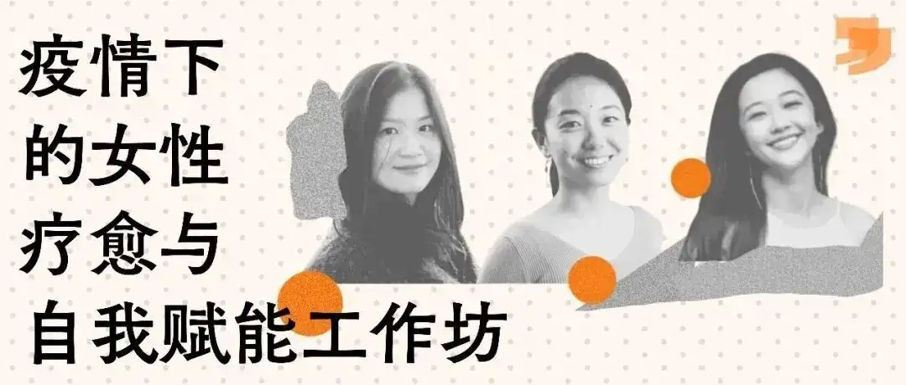


新冠疫情打破了原本的秩序。无论是疫情期间的社交隔离、生活负担加重，还是后疫情时代不确定性的加剧，都令心理健康更加严峻。
在那些疲惫不堪、深感无力的时刻，也许一场内心的疗愈之旅将赋予更强大的内在力量。
《斯坦福社会创新评论》女性之力专栏将于北京时间4月24日（星期日）8:00-10:00pm线上举行“疫情下的女性疗愈与自我赋能工作坊”。我们邀请到了来自艺术疗愈、积极心理学、人生教练等不同领域的嘉宾伙伴，共同赋能。
参加本次公益工作坊，你将收获：
女性之间互相帮助的温暖的场域
面对负面挑战，自我觉察、自我关怀、自我赋能的能力
来自艺术疗愈、积极心理学、生命教练的故事分享、练习与启发
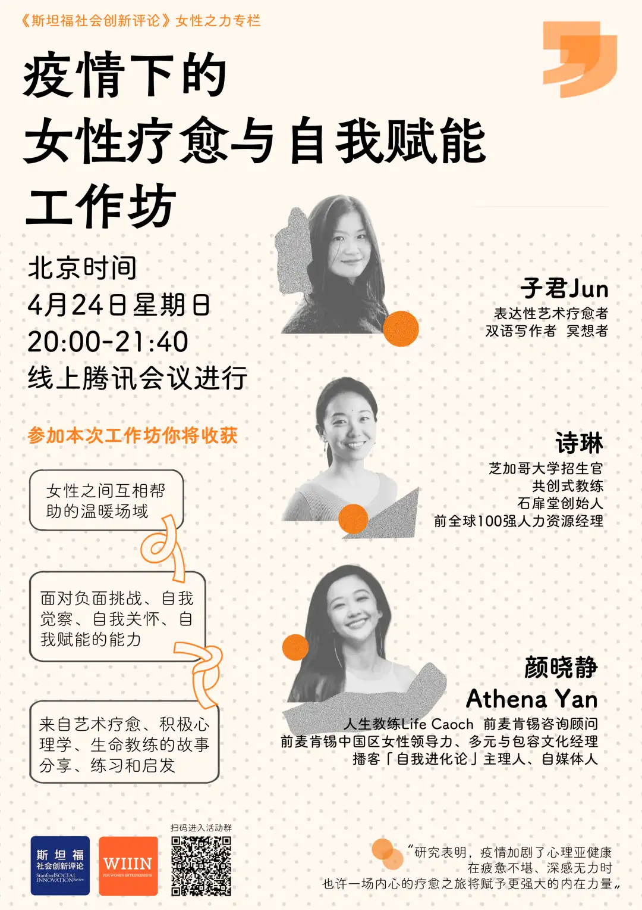
子君Jun
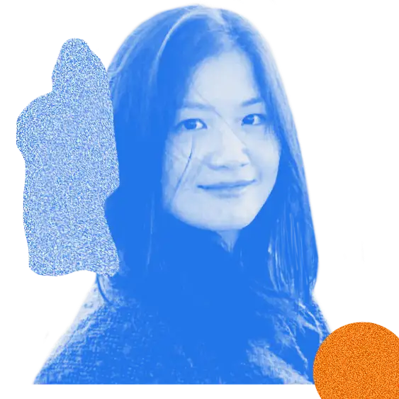
在柬埔寨体验过汉语教学，在英美专研过文学写作、身心疗愈，曾联合创办疗愈类公益机构Splash Institute（幸福行动研究所HA)，现践行表达性艺术疗愈、动静冥想及其他疗愈法，致力于线上下相关工作坊及课程项目，同时撰写文艺类心灵类文字。
Panel环节，子君会由介绍自己专研的领域及探讨疗愈的本质，过渡到一些日常可用的身心调节方法，特别是在疫情居家时。分享自己面对爆炸式负面信息以及负面能量爆棚时的做与不做。
工作坊环节，子君将围绕女性疗愈“心腹能量 - 内在之爱”，以针对心中心和下腹部的静心冥想开启内在体验，而后由静入动，自然流动至肢体舞动，最后回归平衡居中状态，念诵，以及朗读诗歌 。帮助参与者探索腹部的“空洞”/寒凉、心中心的沉重/闷郁，来助力你增强自己的内在力量，从而开启身体与心灵的智慧。
诗琳
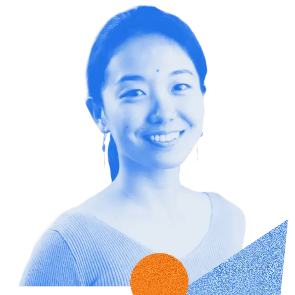
诗琳现任芝加哥大学哈里斯公共政策学院国际招生与合作高级总监。本科毕业后她以管培生身份加入全球100强企业，在三年内成长为一名人力资源经理。随后她来到美国进修，在硕士期间参与国际组织青年就业项目的全球管理。她长期关注个人成长和领导力培养，为20-40岁、跨越中美的有志青年提供咨询和支持。
诗琳于2020年创立了石扉堂，希望汇聚一群有趣的灵魂，撕掉标签，用好奇心与行动力激发每个人的潜能，实现自我价值。目前石扉堂已为超过500名学员提供了社群资源与一对一支持服务，帮助他们在人生转型中深化成长，创造属于自己的幸福人生。
诗琳将介绍积极心理学与共创式教练领域中的一些经典且易操作的实践练习，帮助大家在日常生活中积累对自我和生活的觉察，增强我们对积极事件与情绪的捕捉与扩展，形成可以受到我们自身掌控的正向循环行动计划。
颜晓静Athena Yan
Athena是一名人生教练，她曾经是麦肯锡的咨询顾问，在24岁时找到自己的使命是疗愈并赋能更多人的生命成长后，她追寻使命完成了职业转型，成为麦肯锡中国区首位女性领导力、多元与包容文化经理，并从0到1创建了中国首个跨企业女性赋能平台WAG女性联盟。她同时是个人成长领域的优质内容创作者，播客“自我进化论”的主理人，全网300w+的播放量。
Athena将由自己的生命体验出发，分享在人生的低谷期她如何进行自我疗愈，以及疗愈和整合女性能量如何帮助她成为更绽放和完整的自己.
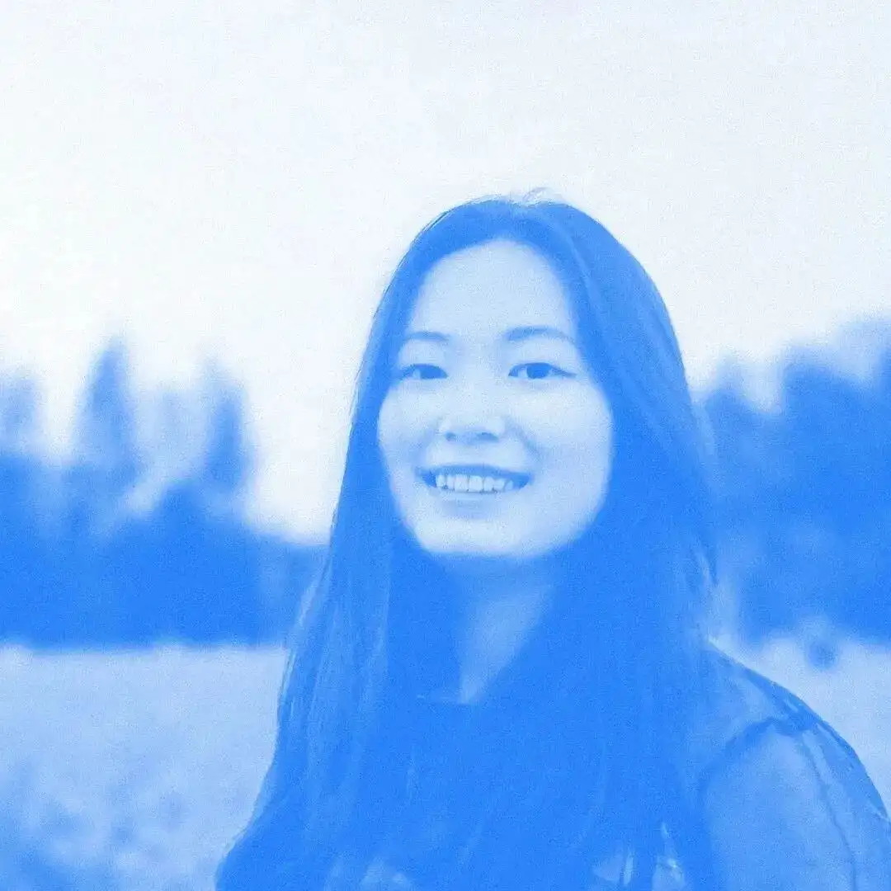
斑马 Valencia Xu
社会创业者，设计思维导师。
《斯坦福社会创新评论》女性之力专栏主理人。专注于“月经健康和卫生”的社会创新组织月事骄傲创始人。哥伦比亚大学MPA。斜杠作家与剧场导演，小说作品曾发表于《光明日报》、《新华文摘》等。
参与方式：
1. 扫描二维码入群，活动的链接会于当天发布在群内。
2. 如上群显示已满，请关注“WIIIN女性创业”公众号，回复“工作坊”，即可获得最新群二维码，活动的链接会于当天发布在群内。
期待与你相遇！
主办方
联合主办方
生态合作伙伴
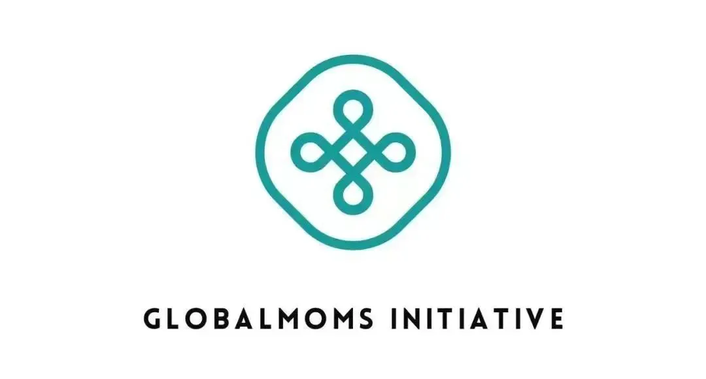
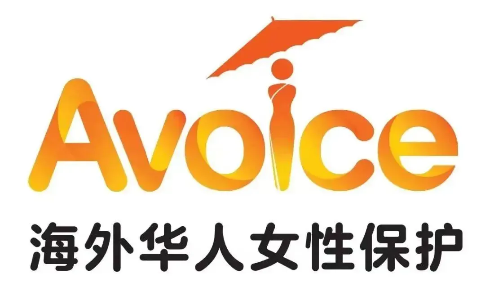
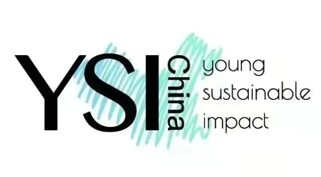
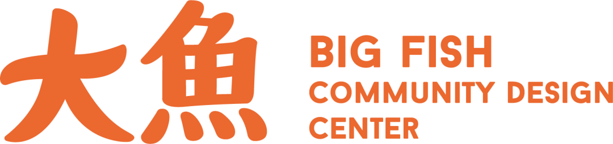
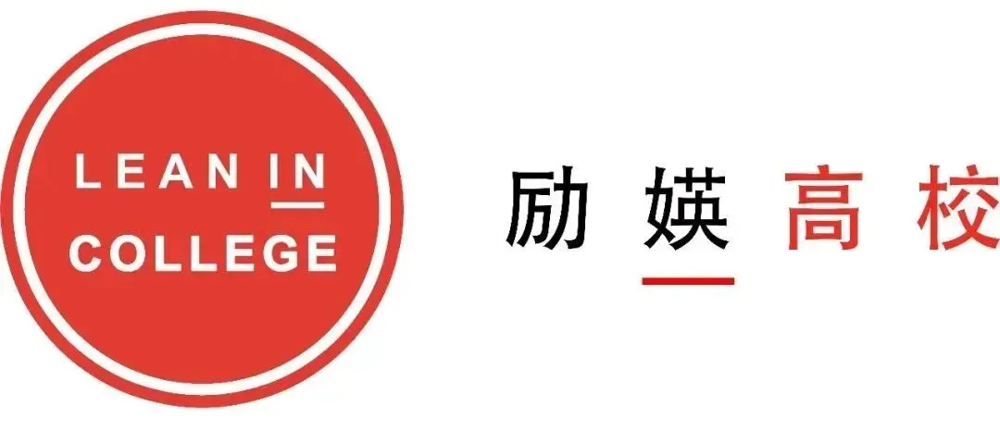
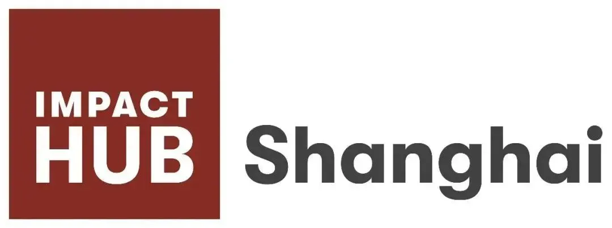
统筹：斑马
文字：牛悦萱
排版：思晓
“女性之力”是《斯坦福社会创新评论》中文版的专栏。我们聚焦女性创业创新者，旨在激发女性在“社会创新、影响力投资、科技向善、可持续发展”等前沿潮流中的无限可能。“女性之力”下设访谈与播客《她与她的世界》、圆桌论坛、共享共创社群——展现女性的多元道路和独特力量，让更多声音成为彼此的回音。
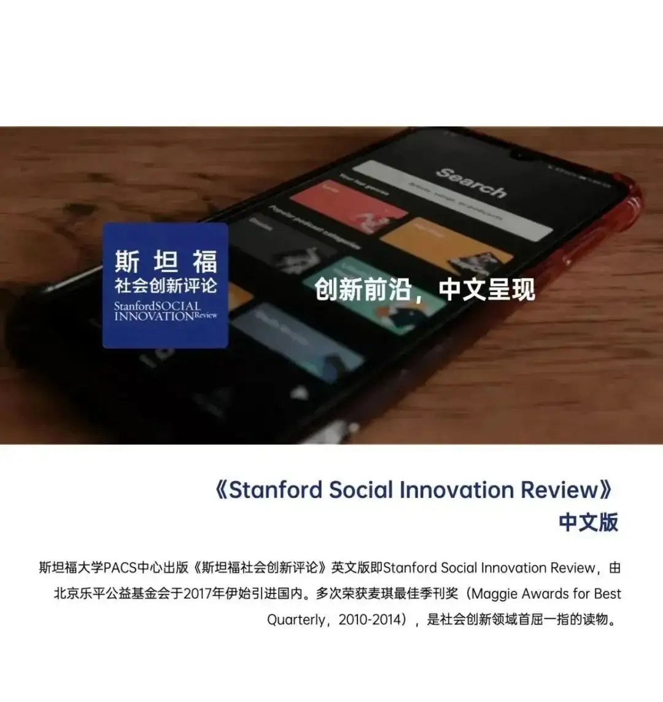